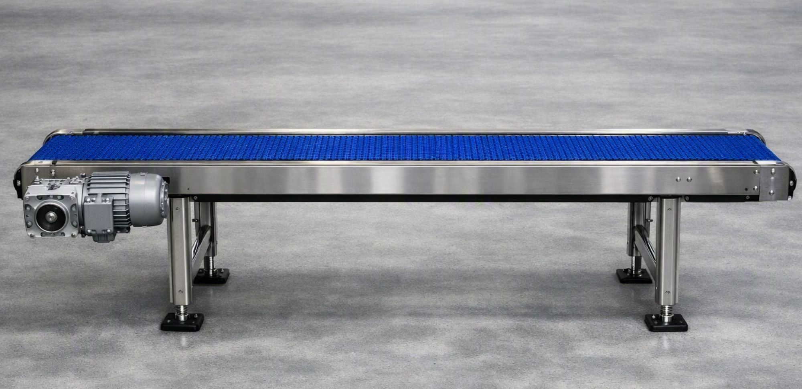

Settore Alimentare
Linea di Trasporto FDA per Confezionamento
Progettazione e installazione di nastri trasportatori in sponda d'acciaio Inox AISI 304 con tappeto in poliuretano alimentare FDA. Ideato per garantire cicli di sanificazione rapida ed eliminare i rischi di contaminazione incrociata.